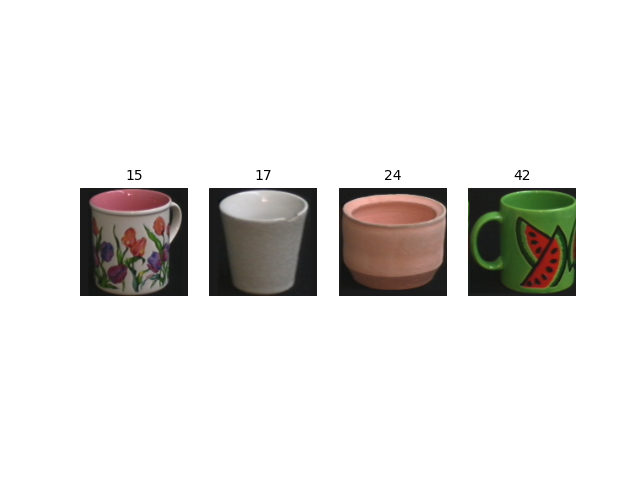

<!DOCTYPE html>
<html class="writer-html5" lang="en" >
<head>
  <meta charset="utf-8" />
  
  <meta name="viewport" content="width=device-width, initial-scale=1.0" />
  
  <title>Akida vision edge learning &mdash; Akida Examples  documentation</title>
  

  
  <link rel="stylesheet" href="../../_static/css/theme.css" type="text/css" />
  <link rel="stylesheet" href="../../_static/pygments.css" type="text/css" />
  <link rel="stylesheet" href="../../_static/gallery.css" type="text/css" />
  <link rel="stylesheet" href="../../_static/gallery-binder.css" type="text/css" />
  <link rel="stylesheet" href="../../_static/gallery-dataframe.css" type="text/css" />
  <link rel="stylesheet" href="../../_static/gallery-rendered-html.css" type="text/css" />

  
  
    <link rel="shortcut icon" href="../../_static/favicon.ico"/>
  

  
  

  

  
  <!--[if lt IE 9]>
    <script src="../../_static/js/html5shiv.min.js"></script>
  <![endif]-->
  
    
      <script type="text/javascript" id="documentation_options" data-url_root="../../" src="../../_static/documentation_options.js"></script>
        <script src="../../_static/jquery.js"></script>
        <script src="../../_static/underscore.js"></script>
        <script src="../../_static/doctools.js"></script>
    
    <script type="text/javascript" src="../../_static/js/theme.js"></script>

    
    <link rel="index" title="Index" href="../../genindex.html" />
    <link rel="search" title="Search" href="../../search.html" />
    <link rel="next" title="Akida edge learning for keyword spotting" href="plot_1_edge_learning_kws.html" />
    <link rel="prev" title="Advanced CNN2SNN tutorial" href="../cnn2snn/plot_1_advanced_cnn2snn.html" /> 
</head>

<body class="wy-body-for-nav">

   
  <div class="wy-grid-for-nav">
    
    <nav data-toggle="wy-nav-shift" class="wy-nav-side">
      <div class="wy-side-scroll">
        <div class="wy-side-nav-search"  style="background: #3f51b5" >
          

          
            <a href="../../index.html">
          

          
            
            
          
          </a>

          
            
            
              <div class="version">
                Akida 1.8.13
              </div>
            
          

          
<div role="search">
  <form id="rtd-search-form" class="wy-form" action="../../search.html" method="get">
    <input type="text" name="q" placeholder="Search docs" />
    <input type="hidden" name="check_keywords" value="yes" />
    <input type="hidden" name="area" value="default" />
  </form>
</div>

          
        </div>

        
        <div class="wy-menu wy-menu-vertical" data-spy="affix" role="navigation" aria-label="main navigation">
          
            
            
              
            
            
              <ul class="current">
<li class="toctree-l1"><a class="reference internal" href="../../index.html">Overview</a></li>
<li class="toctree-l1"><a class="reference internal" href="../../installation.html">Installation</a><ul>
<li class="toctree-l2"><a class="reference internal" href="../../installation.html#requirements">Requirements</a></li>
<li class="toctree-l2"><a class="reference internal" href="../../installation.html#quick-installation">Quick installation</a></li>
<li class="toctree-l2"><a class="reference internal" href="../../installation.html#running-examples">Running examples</a></li>
</ul>
</li>
<li class="toctree-l1"><a class="reference internal" href="../../user_guide/user_guide.html">User guide</a><ul>
<li class="toctree-l2"><a class="reference internal" href="../../user_guide/getting_started.html">Getting started</a><ul>
<li class="toctree-l3"><a class="reference internal" href="../../user_guide/getting_started.html#for-beginners">For beginners</a></li>
<li class="toctree-l3"><a class="reference internal" href="../../user_guide/getting_started.html#for-users-familiar-with-deep-learning">For users familiar with deep-learning</a></li>
</ul>
</li>
<li class="toctree-l2"><a class="reference internal" href="../../user_guide/aee.html">Akida user guide</a><ul>
<li class="toctree-l3"><a class="reference internal" href="../../user_guide/aee.html#the-akida-execution-engine">The Akida Execution Engine</a><ul>
<li class="toctree-l4"><a class="reference internal" href="../../user_guide/aee.html#id1">1. The Spiking Neural Network model</a></li>
<li class="toctree-l4"><a class="reference internal" href="../../user_guide/aee.html#id2">2. Input data format</a></li>
<li class="toctree-l4"><a class="reference internal" href="../../user_guide/aee.html#id3">3. Determine training mode</a></li>
<li class="toctree-l4"><a class="reference internal" href="../../user_guide/aee.html#id4">4. Interpreting outputs</a></li>
</ul>
</li>
<li class="toctree-l3"><a class="reference internal" href="../../user_guide/aee.html#neural-network-model">Neural Network model</a><ul>
<li class="toctree-l4"><a class="reference internal" href="../../user_guide/aee.html#specifying-the-neural-network-model">Specifying the Neural Network model</a></li>
<li class="toctree-l4"><a class="reference internal" href="../../user_guide/aee.html#saving-and-loading">Saving and loading</a></li>
<li class="toctree-l4"><a class="reference internal" href="../../user_guide/aee.html#input-layer-types">Input layer types</a></li>
<li class="toctree-l4"><a class="reference internal" href="../../user_guide/aee.html#data-processing-layer-types">Data-Processing layer types</a></li>
</ul>
</li>
<li class="toctree-l3"><a class="reference internal" href="../../user_guide/aee.html#id5">Using Akida Unsupervised Learning</a><ul>
<li class="toctree-l4"><a class="reference internal" href="../../user_guide/aee.html#learning-constraints">Learning constraints</a></li>
<li class="toctree-l4"><a class="reference internal" href="../../user_guide/aee.html#compiling-a-layer">Compiling a layer</a></li>
<li class="toctree-l4"><a class="reference internal" href="../../user_guide/aee.html#id6">Learning parameters</a></li>
</ul>
</li>
</ul>
</li>
<li class="toctree-l2"><a class="reference internal" href="../../user_guide/cnn2snn.html">CNN2SNN toolkit</a><ul>
<li class="toctree-l3"><a class="reference internal" href="../../user_guide/cnn2snn.html#overview">Overview</a><ul>
<li class="toctree-l4"><a class="reference internal" href="../../user_guide/cnn2snn.html#conversion-workflow">Conversion workflow</a></li>
<li class="toctree-l4"><a class="reference internal" href="../../user_guide/cnn2snn.html#typical-training-scenario">Typical training scenario</a></li>
<li class="toctree-l4"><a class="reference internal" href="../../user_guide/cnn2snn.html#design-compatibility-constraints">Design compatibility constraints</a></li>
<li class="toctree-l4"><a class="reference internal" href="../../user_guide/cnn2snn.html#quantization-compatibility-constraints">Quantization compatibility constraints</a></li>
<li class="toctree-l4"><a class="reference internal" href="../../user_guide/cnn2snn.html#command-line-interface">Command-line interface</a></li>
</ul>
</li>
<li class="toctree-l3"><a class="reference internal" href="../../user_guide/cnn2snn.html#layers-considerations">Layers Considerations</a><ul>
<li class="toctree-l4"><a class="reference internal" href="../../user_guide/cnn2snn.html#supported-layer-types">Supported layer types</a></li>
<li class="toctree-l4"><a class="reference internal" href="../../user_guide/cnn2snn.html#cnn2snn-quantization-aware-layers">CNN2SNN Quantization-aware layers</a></li>
<li class="toctree-l4"><a class="reference internal" href="../../user_guide/cnn2snn.html#training-only-layers">Training-Only Layers</a></li>
<li class="toctree-l4"><a class="reference internal" href="../../user_guide/cnn2snn.html#first-layers">First Layers</a></li>
<li class="toctree-l4"><a class="reference internal" href="../../user_guide/cnn2snn.html#id6">Final Layers</a></li>
</ul>
</li>
<li class="toctree-l3"><a class="reference internal" href="../../user_guide/cnn2snn.html#tips-and-tricks">Tips and Tricks</a></li>
</ul>
</li>
<li class="toctree-l2"><a class="reference internal" href="../../user_guide/akida_models.html">Akida models zoo</a><ul>
<li class="toctree-l3"><a class="reference internal" href="../../user_guide/akida_models.html#overview">Overview</a></li>
<li class="toctree-l3"><a class="reference internal" href="../../user_guide/akida_models.html#command-line-interface-for-model-creation">Command-line interface for model creation</a></li>
<li class="toctree-l3"><a class="reference internal" href="../../user_guide/akida_models.html#command-line-interface-for-model-training">Command-line interface for model training</a><ul>
<li class="toctree-l4"><a class="reference internal" href="../../user_guide/akida_models.html#cifar10-training-and-tuning">CIFAR10 training and tuning</a></li>
<li class="toctree-l4"><a class="reference internal" href="../../user_guide/akida_models.html#utk-face-training">UTK Face training</a></li>
<li class="toctree-l4"><a class="reference internal" href="../../user_guide/akida_models.html#kws-training">KWS training</a></li>
<li class="toctree-l4"><a class="reference internal" href="../../user_guide/akida_models.html#yolo-training">YOLO training</a></li>
</ul>
</li>
<li class="toctree-l3"><a class="reference internal" href="../../user_guide/akida_models.html#id1">Layer Blocks</a><ul>
<li class="toctree-l4"><a class="reference internal" href="../../user_guide/akida_models.html#conv-block"><code class="docutils literal notranslate"><span class="pre">conv_block</span></code></a></li>
<li class="toctree-l4"><a class="reference internal" href="../../user_guide/akida_models.html#dense-block"><code class="docutils literal notranslate"><span class="pre">dense_block</span></code></a></li>
<li class="toctree-l4"><a class="reference internal" href="../../user_guide/akida_models.html#separable-conv-block"><code class="docutils literal notranslate"><span class="pre">separable_conv_block</span></code></a></li>
</ul>
</li>
</ul>
</li>
<li class="toctree-l2"><a class="reference internal" href="../../user_guide/hw_constraints.html">Hardware constraints</a><ul>
<li class="toctree-l3"><a class="reference internal" href="../../user_guide/hw_constraints.html#akida-nsoc-pre-production">Akida NSoC (Pre-production)</a><ul>
<li class="toctree-l4"><a class="reference internal" href="../../user_guide/hw_constraints.html#inputconvolutional">InputConvolutional</a></li>
<li class="toctree-l4"><a class="reference internal" href="../../user_guide/hw_constraints.html#convolutional">Convolutional</a></li>
<li class="toctree-l4"><a class="reference internal" href="../../user_guide/hw_constraints.html#separableconvolutional">SeparableConvolutional</a></li>
<li class="toctree-l4"><a class="reference internal" href="../../user_guide/hw_constraints.html#fullyconnected">FullyConnected</a></li>
</ul>
</li>
<li class="toctree-l3"><a class="reference internal" href="../../user_guide/hw_constraints.html#akida-nsoc-production">Akida NSoC (Production)</a><ul>
<li class="toctree-l4"><a class="reference internal" href="../../user_guide/hw_constraints.html#id1">InputConvolutional</a></li>
<li class="toctree-l4"><a class="reference internal" href="../../user_guide/hw_constraints.html#id2">Convolutional</a></li>
<li class="toctree-l4"><a class="reference internal" href="../../user_guide/hw_constraints.html#id3">SeparableConvolutional</a></li>
<li class="toctree-l4"><a class="reference internal" href="../../user_guide/hw_constraints.html#id4">FullyConnected</a></li>
</ul>
</li>
</ul>
</li>
<li class="toctree-l2"><a class="reference internal" href="../../user_guide/compatibility.html">Akida versions compatibility</a><ul>
<li class="toctree-l3"><a class="reference internal" href="../../user_guide/compatibility.html#upgrading-models-with-legacy-quantizers">Upgrading models with legacy quantizers</a></li>
</ul>
</li>
</ul>
</li>
<li class="toctree-l1"><a class="reference internal" href="../../api_reference/api_reference.html">API reference</a><ul>
<li class="toctree-l2"><a class="reference internal" href="../../api_reference/aee_apis.html">Akida Execution Engine</a><ul>
<li class="toctree-l3"><a class="reference internal" href="../../api_reference/aee_apis.html#model">Model</a></li>
<li class="toctree-l3"><a class="reference internal" href="../../api_reference/aee_apis.html#layer">Layer</a></li>
<li class="toctree-l3"><a class="reference internal" href="../../api_reference/aee_apis.html#layerstatistics">LayerStatistics</a></li>
<li class="toctree-l3"><a class="reference internal" href="../../api_reference/aee_apis.html#inputdata">InputData</a></li>
<li class="toctree-l3"><a class="reference internal" href="../../api_reference/aee_apis.html#inputconvolutional">InputConvolutional</a></li>
<li class="toctree-l3"><a class="reference internal" href="../../api_reference/aee_apis.html#fullyconnected">FullyConnected</a></li>
<li class="toctree-l3"><a class="reference internal" href="../../api_reference/aee_apis.html#convolutional">Convolutional</a></li>
<li class="toctree-l3"><a class="reference internal" href="../../api_reference/aee_apis.html#separableconvolutional">SeparableConvolutional</a></li>
<li class="toctree-l3"><a class="reference internal" href="../../api_reference/aee_apis.html#concat">Concat</a></li>
<li class="toctree-l3"><a class="reference internal" href="../../api_reference/aee_apis.html#dense">Dense</a></li>
<li class="toctree-l3"><a class="reference internal" href="../../api_reference/aee_apis.html#backend">Backend</a></li>
<li class="toctree-l3"><a class="reference internal" href="../../api_reference/aee_apis.html#convolutionmode">ConvolutionMode</a></li>
<li class="toctree-l3"><a class="reference internal" href="../../api_reference/aee_apis.html#poolingtype">PoolingType</a></li>
<li class="toctree-l3"><a class="reference internal" href="../../api_reference/aee_apis.html#learningtype">LearningType</a></li>
<li class="toctree-l3"><a class="reference internal" href="../../api_reference/aee_apis.html#compatibility">Compatibility</a></li>
</ul>
</li>
<li class="toctree-l2"><a class="reference internal" href="../../api_reference/cnn2snn_apis.html">CNN2SNN</a><ul>
<li class="toctree-l3"><a class="reference internal" href="../../api_reference/cnn2snn_apis.html#tool-functions">Tool functions</a><ul>
<li class="toctree-l4"><a class="reference internal" href="../../api_reference/cnn2snn_apis.html#quantize">quantize</a></li>
<li class="toctree-l4"><a class="reference internal" href="../../api_reference/cnn2snn_apis.html#quantize-layer">quantize_layer</a></li>
<li class="toctree-l4"><a class="reference internal" href="../../api_reference/cnn2snn_apis.html#convert">convert</a></li>
<li class="toctree-l4"><a class="reference internal" href="../../api_reference/cnn2snn_apis.html#check-model-compatibility">check_model_compatibility</a></li>
<li class="toctree-l4"><a class="reference internal" href="../../api_reference/cnn2snn_apis.html#load-quantized-model">load_quantized_model</a></li>
<li class="toctree-l4"><a class="reference internal" href="../../api_reference/cnn2snn_apis.html#load-partial-weights">load_partial_weights</a></li>
</ul>
</li>
<li class="toctree-l3"><a class="reference internal" href="../../api_reference/cnn2snn_apis.html#quantizers">Quantizers</a><ul>
<li class="toctree-l4"><a class="reference internal" href="../../api_reference/cnn2snn_apis.html#weightquantizer">WeightQuantizer</a></li>
<li class="toctree-l4"><a class="reference internal" href="../../api_reference/cnn2snn_apis.html#linearweightquantizer">LinearWeightQuantizer</a></li>
<li class="toctree-l4"><a class="reference internal" href="../../api_reference/cnn2snn_apis.html#stdweightquantizer">StdWeightQuantizer</a></li>
<li class="toctree-l4"><a class="reference internal" href="../../api_reference/cnn2snn_apis.html#trainablestdweightquantizer">TrainableStdWeightQuantizer</a></li>
<li class="toctree-l4"><a class="reference internal" href="../../api_reference/cnn2snn_apis.html#maxquantizer">MaxQuantizer</a></li>
<li class="toctree-l4"><a class="reference internal" href="../../api_reference/cnn2snn_apis.html#maxperaxisquantizer">MaxPerAxisQuantizer</a></li>
</ul>
</li>
<li class="toctree-l3"><a class="reference internal" href="../../api_reference/cnn2snn_apis.html#quantized-layers">Quantized layers</a><ul>
<li class="toctree-l4"><a class="reference internal" href="../../api_reference/cnn2snn_apis.html#quantizedconv2d">QuantizedConv2D</a></li>
<li class="toctree-l4"><a class="reference internal" href="../../api_reference/cnn2snn_apis.html#quantizeddepthwiseconv2d">QuantizedDepthwiseConv2D</a></li>
<li class="toctree-l4"><a class="reference internal" href="../../api_reference/cnn2snn_apis.html#quantizeddense">QuantizedDense</a></li>
<li class="toctree-l4"><a class="reference internal" href="../../api_reference/cnn2snn_apis.html#quantizedseparableconv2d">QuantizedSeparableConv2D</a></li>
<li class="toctree-l4"><a class="reference internal" href="../../api_reference/cnn2snn_apis.html#quantizedactivation">QuantizedActivation</a></li>
<li class="toctree-l4"><a class="reference internal" href="../../api_reference/cnn2snn_apis.html#activationdiscreterelu">ActivationDiscreteRelu</a></li>
<li class="toctree-l4"><a class="reference internal" href="../../api_reference/cnn2snn_apis.html#quantizedrelu">QuantizedReLU</a></li>
</ul>
</li>
</ul>
</li>
<li class="toctree-l2"><a class="reference internal" href="../../api_reference/akida_models_apis.html">Akida models</a><ul>
<li class="toctree-l3"><a class="reference internal" href="../../api_reference/akida_models_apis.html#layer-blocks">Layer blocks</a><ul>
<li class="toctree-l4"><a class="reference internal" href="../../api_reference/akida_models_apis.html#conv-block">conv_block</a></li>
<li class="toctree-l4"><a class="reference internal" href="../../api_reference/akida_models_apis.html#separable-conv-block">separable_conv_block</a></li>
<li class="toctree-l4"><a class="reference internal" href="../../api_reference/akida_models_apis.html#dense-block">dense_block</a></li>
</ul>
</li>
<li class="toctree-l3"><a class="reference internal" href="../../api_reference/akida_models_apis.html#model-zoo">Model zoo</a><ul>
<li class="toctree-l4"><a class="reference internal" href="../../api_reference/akida_models_apis.html#mobilenet">Mobilenet</a></li>
<li class="toctree-l4"><a class="reference internal" href="../../api_reference/akida_models_apis.html#ds-cnn">DS-CNN</a></li>
<li class="toctree-l4"><a class="reference internal" href="../../api_reference/akida_models_apis.html#vgg">VGG</a></li>
<li class="toctree-l4"><a class="reference internal" href="../../api_reference/akida_models_apis.html#yolo">YOLO</a></li>
</ul>
</li>
</ul>
</li>
</ul>
</li>
<li class="toctree-l1 current"><a class="reference internal" href="../index.html">Examples</a><ul class="current">
<li class="toctree-l2"><a class="reference internal" href="../index.html#general-examples">General examples</a><ul>
<li class="toctree-l3"><a class="reference internal" href="../general/plot_0_gxnor_mnist.html">GXNOR/MNIST inference</a><ul>
<li class="toctree-l4"><a class="reference internal" href="../general/plot_0_gxnor_mnist.html#dataset-preparation">1. Dataset preparation</a></li>
<li class="toctree-l4"><a class="reference internal" href="../general/plot_0_gxnor_mnist.html#load-the-pre-trained-akida-model">2. Load the pre-trained Akida model</a></li>
<li class="toctree-l4"><a class="reference internal" href="../general/plot_0_gxnor_mnist.html#show-predictions-for-a-single-image">3. Show predictions for a single image</a></li>
<li class="toctree-l4"><a class="reference internal" href="../general/plot_0_gxnor_mnist.html#check-performance">4. Check performance</a></li>
</ul>
</li>
<li class="toctree-l3"><a class="reference internal" href="../general/plot_1_ds_cnn_cifar10.html">DS-CNN CIFAR10 inference</a><ul>
<li class="toctree-l4"><a class="reference internal" href="../general/plot_1_ds_cnn_cifar10.html#dataset-preparation">1. Dataset preparation</a></li>
<li class="toctree-l4"><a class="reference internal" href="../general/plot_1_ds_cnn_cifar10.html#create-a-keras-ds-cnn-model">2. Create a Keras DS-CNN model</a></li>
<li class="toctree-l4"><a class="reference internal" href="../general/plot_1_ds_cnn_cifar10.html#quantized-model">3. Quantized model</a></li>
<li class="toctree-l4"><a class="reference internal" href="../general/plot_1_ds_cnn_cifar10.html#pretrained-quantized-model">4. Pretrained quantized model</a></li>
<li class="toctree-l4"><a class="reference internal" href="../general/plot_1_ds_cnn_cifar10.html#conversion-to-akida">5. Conversion to Akida</a></li>
</ul>
</li>
<li class="toctree-l3"><a class="reference internal" href="../general/plot_2_mobilenet_imagenet.html">MobileNet/ImageNet inference</a><ul>
<li class="toctree-l4"><a class="reference internal" href="../general/plot_2_mobilenet_imagenet.html#dataset-preparation">1. Dataset preparation</a></li>
<li class="toctree-l4"><a class="reference internal" href="../general/plot_2_mobilenet_imagenet.html#create-a-keras-mobilenet-model">2. Create a Keras MobileNet model</a></li>
<li class="toctree-l4"><a class="reference internal" href="../general/plot_2_mobilenet_imagenet.html#quantized-model">3. Quantized model</a></li>
<li class="toctree-l4"><a class="reference internal" href="../general/plot_2_mobilenet_imagenet.html#pretrained-quantized-model">4. Pretrained quantized model</a></li>
<li class="toctree-l4"><a class="reference internal" href="../general/plot_2_mobilenet_imagenet.html#conversion-to-akida">5. Conversion to Akida</a></li>
</ul>
</li>
<li class="toctree-l3"><a class="reference internal" href="../general/plot_3_ds_cnn_kws.html">DS-CNN/KWS inference</a><ul>
<li class="toctree-l4"><a class="reference internal" href="../general/plot_3_ds_cnn_kws.html#load-the-preprocessed-dataset">1. Load the preprocessed dataset</a></li>
<li class="toctree-l4"><a class="reference internal" href="../general/plot_3_ds_cnn_kws.html#load-a-pre-trained-native-keras-model">2. Load a pre-trained native Keras model</a></li>
<li class="toctree-l4"><a class="reference internal" href="../general/plot_3_ds_cnn_kws.html#load-a-pre-trained-quantized-keras-model-satisfying-akida-nsoc-requirements">3. Load a pre-trained quantized Keras model satisfying Akida NSoC requirements</a></li>
<li class="toctree-l4"><a class="reference internal" href="../general/plot_3_ds_cnn_kws.html#conversion-to-akida">4. Conversion to Akida</a></li>
</ul>
</li>
<li class="toctree-l3"><a class="reference internal" href="../general/plot_4_regression.html">Regression tutorial</a><ul>
<li class="toctree-l4"><a class="reference internal" href="../general/plot_4_regression.html#load-the-dataset">1. Load the dataset</a></li>
<li class="toctree-l4"><a class="reference internal" href="../general/plot_4_regression.html#load-a-pre-trained-native-keras-model">2. Load a pre-trained native Keras model</a></li>
<li class="toctree-l4"><a class="reference internal" href="../general/plot_4_regression.html#load-a-pre-trained-quantized-keras-model-satisfying-akida-nsoc-requirements">3. Load a pre-trained quantized Keras model satisfying Akida NSoC requirements</a></li>
<li class="toctree-l4"><a class="reference internal" href="../general/plot_4_regression.html#conversion-to-akida">4. Conversion to Akida</a></li>
<li class="toctree-l4"><a class="reference internal" href="../general/plot_4_regression.html#estimate-age-on-a-single-image">5. Estimate age on a single image</a></li>
</ul>
</li>
<li class="toctree-l3"><a class="reference internal" href="../general/plot_5_transfer_learning.html">Transfer learning with MobileNet for cats vs. dogs</a><ul>
<li class="toctree-l4"><a class="reference internal" href="../general/plot_5_transfer_learning.html#transfer-learning-process">Transfer learning process</a></li>
<li class="toctree-l4"><a class="reference internal" href="../general/plot_5_transfer_learning.html#load-and-preprocess-data">1. Load and preprocess data</a></li>
<li class="toctree-l4"><a class="reference internal" href="../general/plot_5_transfer_learning.html#modify-a-pre-trained-base-keras-model">2. Modify a pre-trained base Keras model</a></li>
<li class="toctree-l4"><a class="reference internal" href="../general/plot_5_transfer_learning.html#train-the-transferred-model-for-the-new-task">3. Train the transferred model for the new task</a></li>
<li class="toctree-l4"><a class="reference internal" href="../general/plot_5_transfer_learning.html#quantize-the-top-layer">4 Quantize the top layer</a></li>
<li class="toctree-l4"><a class="reference internal" href="../general/plot_5_transfer_learning.html#convert-to-akida">5. Convert to Akida</a></li>
<li class="toctree-l4"><a class="reference internal" href="../general/plot_5_transfer_learning.html#plot-confusion-matrix">6. Plot confusion matrix</a></li>
</ul>
</li>
<li class="toctree-l3"><a class="reference internal" href="../general/plot_6_voc_yolo_detection.html">YOLO/PASCAL-VOC detection tutorial</a><ul>
<li class="toctree-l4"><a class="reference internal" href="../general/plot_6_voc_yolo_detection.html#introduction">1. Introduction</a></li>
<li class="toctree-l4"><a class="reference internal" href="../general/plot_6_voc_yolo_detection.html#preprocessing-tools">2. Preprocessing tools</a></li>
<li class="toctree-l4"><a class="reference internal" href="../general/plot_6_voc_yolo_detection.html#model-architecture">3. Model architecture</a></li>
<li class="toctree-l4"><a class="reference internal" href="../general/plot_6_voc_yolo_detection.html#training">4. Training</a></li>
<li class="toctree-l4"><a class="reference internal" href="../general/plot_6_voc_yolo_detection.html#performance">5. Performance</a></li>
<li class="toctree-l4"><a class="reference internal" href="../general/plot_6_voc_yolo_detection.html#conversion-to-akida">6. Conversion to Akida</a></li>
</ul>
</li>
</ul>
</li>
<li class="toctree-l2"><a class="reference internal" href="../index.html#cnn2snn-tutorials">CNN2SNN tutorials</a><ul>
<li class="toctree-l3"><a class="reference internal" href="../cnn2snn/plot_0_cnn_flow.html">CNN conversion flow tutorial</a><ul>
<li class="toctree-l4"><a class="reference internal" href="../cnn2snn/plot_0_cnn_flow.html#load-and-reshape-mnist-dataset">1. Load and reshape MNIST dataset</a></li>
<li class="toctree-l4"><a class="reference internal" href="../cnn2snn/plot_0_cnn_flow.html#model-definition">2. Model definition</a></li>
<li class="toctree-l4"><a class="reference internal" href="../cnn2snn/plot_0_cnn_flow.html#model-quantization">4. Model quantization</a></li>
<li class="toctree-l4"><a class="reference internal" href="../cnn2snn/plot_0_cnn_flow.html#model-fine-tuning-quantization-aware-training">5. Model fine tuning (quantization-aware training)</a></li>
<li class="toctree-l4"><a class="reference internal" href="../cnn2snn/plot_0_cnn_flow.html#model-conversion">6. Model conversion</a></li>
</ul>
</li>
<li class="toctree-l3"><a class="reference internal" href="../cnn2snn/plot_1_advanced_cnn2snn.html">Advanced CNN2SNN tutorial</a><ul>
<li class="toctree-l4"><a class="reference internal" href="../cnn2snn/plot_1_advanced_cnn2snn.html#design-a-cnn2snn-quantized-model">1. Design a CNN2SNN quantized model</a></li>
<li class="toctree-l4"><a class="reference internal" href="../cnn2snn/plot_1_advanced_cnn2snn.html#weight-quantizer-details">2. Weight Quantizer Details</a></li>
<li class="toctree-l4"><a class="reference internal" href="../cnn2snn/plot_1_advanced_cnn2snn.html#quantized-activation-layer-details">3. Quantized Activation Layer Details</a></li>
</ul>
</li>
</ul>
</li>
<li class="toctree-l2 current"><a class="reference internal" href="../index.html#edge-examples">Edge examples</a><ul class="current">
<li class="toctree-l3 current"><a class="current reference internal" href="#">Akida vision edge learning</a><ul>
<li class="toctree-l4"><a class="reference internal" href="#dataset-preparation">1. Dataset preparation</a></li>
<li class="toctree-l4"><a class="reference internal" href="#prepare-akida-model-for-learning">2. Prepare Akida model for learning</a></li>
<li class="toctree-l4"><a class="reference internal" href="#edge-learning-with-akida">3. Edge learning with Akida</a></li>
</ul>
</li>
<li class="toctree-l3"><a class="reference internal" href="plot_1_edge_learning_kws.html">Akida edge learning for keyword spotting</a><ul>
<li class="toctree-l4"><a class="reference internal" href="plot_1_edge_learning_kws.html#edge-learning-process">1. Edge learning process</a></li>
<li class="toctree-l4"><a class="reference internal" href="plot_1_edge_learning_kws.html#dataset-preparation">2. Dataset preparation</a></li>
<li class="toctree-l4"><a class="reference internal" href="plot_1_edge_learning_kws.html#prepare-akida-model-for-learning">3. Prepare Akida model for learning</a></li>
<li class="toctree-l4"><a class="reference internal" href="plot_1_edge_learning_kws.html#learn-with-akida-using-the-training-set">4. Learn with Akida using the training set</a></li>
<li class="toctree-l4"><a class="reference internal" href="plot_1_edge_learning_kws.html#edge-learning">4. Edge learning</a></li>
</ul>
</li>
<li class="toctree-l3"><a class="reference internal" href="plot_2_edge_learning_parameters.html">Tips to set Akida learning parameters</a><ul>
<li class="toctree-l4"><a class="reference internal" href="plot_2_edge_learning_parameters.html#akida-learning-parameters">1. Akida learning parameters</a></li>
<li class="toctree-l4"><a class="reference internal" href="plot_2_edge_learning_parameters.html#create-akida-model">2. Create Akida model</a></li>
<li class="toctree-l4"><a class="reference internal" href="plot_2_edge_learning_parameters.html#estimate-the-required-number-of-weights-of-the-trainable-layer">3. Estimate the required number of weights of the trainable layer</a></li>
<li class="toctree-l4"><a class="reference internal" href="plot_2_edge_learning_parameters.html#estimate-the-number-of-neurons-per-class">4. Estimate the number of neurons per class</a></li>
</ul>
</li>
</ul>
</li>
</ul>
</li>
<li class="toctree-l1"><a class="reference external" href="https://github.com/Brainchip-Inc/akida_examples/releases">Changelog</a></li>
<li class="toctree-l1"><a class="reference external" href="https://support.brainchip.com/portal/home">Support</a></li>
<li class="toctree-l1"><a class="reference internal" href="../../license.html">License</a></li>
</ul>

            
          
        </div>
        
      </div>
    </nav>

    <section data-toggle="wy-nav-shift" class="wy-nav-content-wrap">

      
      <nav class="wy-nav-top" aria-label="top navigation">
        
          <i data-toggle="wy-nav-top" class="fa fa-bars"></i>
          <a href="../../index.html">Akida Examples</a>
        
      </nav>


      <div class="wy-nav-content">
        
        <div class="rst-content">
        
          


<div role="navigation" aria-label="breadcrumbs navigation">

  <ul class="wy-breadcrumbs">
    
      <li><a href="../../index.html" class="icon icon-home"></a> &raquo;</li>
        
          <li><a href="../index.html">Akida examples</a> &raquo;</li>
        
      <li>Akida vision edge learning</li>
    
    
      <li class="wy-breadcrumbs-aside">
        
          
        
      </li>
    
  </ul>

  
  <hr/>
</div>
          <div role="main" class="document" itemscope="itemscope" itemtype="http://schema.org/Article">
           <div itemprop="articleBody">
            
  <div class="sphx-glr-download-link-note admonition note">
<p class="admonition-title">Note</p>
<p>Click <a class="reference internal" href="#sphx-glr-download-examples-edge-plot-0-edge-learning-vision-py"><span class="std std-ref">here</span></a>
to download the full example code</p>
</div>
<div class="sphx-glr-example-title section" id="akida-vision-edge-learning">
<span id="sphx-glr-examples-edge-plot-0-edge-learning-vision-py"></span><h1>Akida vision edge learning<a class="headerlink" href="#akida-vision-edge-learning" title="Permalink to this headline">¶</a></h1>
<p>This tutorial demonstrates the Akida NSoC <strong>edge learning</strong> capabilities using
its built-in learning algorithm.
It focuses on an image classification example, where an existing Akida network
is re-trained to be able to classify images from 4 new classes.</p>
<p>Just a few samples (few-shot learning) of the new classes are sufficient
to augment the Akida model with extra classes, while preserving high accuracy.</p>
<p>Please refer to the <a class="reference external" href="plot_1_edge_learning_kws.html">keyword spotting (KWS) tutorial</a>
for edge learning documentation, parameters fine tuning and steps details.</p>
<div class="section" id="dataset-preparation">
<h2>1. Dataset preparation<a class="headerlink" href="#dataset-preparation" title="Permalink to this headline">¶</a></h2>
<div class="highlight-default notranslate"><div class="highlight"><pre><span></span><span class="kn">import</span> <span class="nn">tensorflow_datasets</span> <span class="k">as</span> <span class="nn">tfds</span>

<span class="c1"># Retrieve TensorFlow `coil100 &lt;https://www.tensorflow.org/datasets/catalog/coil100&gt;`__</span>
<span class="c1"># dataset</span>
<span class="n">ds</span><span class="p">,</span> <span class="n">ds_info</span> <span class="o">=</span> <span class="n">tfds</span><span class="o">.</span><span class="n">load</span><span class="p">(</span><span class="s1">&#39;coil100:2.*.*&#39;</span><span class="p">,</span> <span class="n">split</span><span class="o">=</span><span class="s1">&#39;train&#39;</span><span class="p">,</span> <span class="n">with_info</span><span class="o">=</span><span class="kc">True</span><span class="p">)</span>
<span class="nb">print</span><span class="p">(</span><span class="n">ds_info</span><span class="o">.</span><span class="n">description</span><span class="p">)</span>
</pre></div>
</div>
<p class="sphx-glr-script-out">Out:</p>
<div class="sphx-glr-script-out highlight-none notranslate"><div class="highlight"><pre><span></span>Downloading and preparing dataset 124.63 MiB (download: 124.63 MiB, generated: 124.74 MiB, total: 249.37 MiB) to /root/tensorflow_datasets/coil100/2.0.0...
Dataset coil100 downloaded and prepared to /root/tensorflow_datasets/coil100/2.0.0. Subsequent calls will reuse this data.
The dataset contains 7200 color images of 100 objects
(72 images per object). The objects have a wide variety of complex geometric and reflectance characteristics.
The objects were placed on a motorized turntable against a black background.
The turntable was rotated through 360 degrees to vary object pose with respect to a fxed color camera.
Images of the objects were taken at pose intervals of   5 degrees.This corresponds to
72 poses per object
</pre></div>
</div>
<div class="highlight-default notranslate"><div class="highlight"><pre><span></span><span class="c1"># Select the 4 cup objects that will be used as new classes</span>
<span class="n">object_ids</span> <span class="o">=</span> <span class="p">[</span><span class="mi">15</span><span class="p">,</span> <span class="mi">17</span><span class="p">,</span> <span class="mi">24</span><span class="p">,</span> <span class="mi">42</span><span class="p">]</span>
<span class="n">object_dict</span> <span class="o">=</span> <span class="p">{</span><span class="n">k</span><span class="p">:</span> <span class="p">[]</span> <span class="k">for</span> <span class="n">k</span> <span class="ow">in</span> <span class="n">object_ids</span><span class="p">}</span>
<span class="k">for</span> <span class="n">data</span> <span class="ow">in</span> <span class="n">ds</span><span class="p">:</span>
    <span class="n">object_id</span> <span class="o">=</span> <span class="n">data</span><span class="p">[</span><span class="s1">&#39;object_id&#39;</span><span class="p">]</span><span class="o">.</span><span class="n">numpy</span><span class="p">()</span>
    <span class="k">if</span> <span class="n">object_id</span> <span class="ow">in</span> <span class="n">object_dict</span><span class="o">.</span><span class="n">keys</span><span class="p">():</span>
        <span class="n">object_dict</span><span class="p">[</span><span class="n">object_id</span><span class="p">]</span><span class="o">.</span><span class="n">append</span><span class="p">(</span><span class="n">data</span><span class="p">[</span><span class="s1">&#39;image&#39;</span><span class="p">]</span><span class="o">.</span><span class="n">numpy</span><span class="p">())</span>
</pre></div>
</div>
<div class="highlight-default notranslate"><div class="highlight"><pre><span></span><span class="kn">import</span> <span class="nn">matplotlib.pyplot</span> <span class="k">as</span> <span class="nn">plt</span>

<span class="c1"># Display one image per selected object</span>
<span class="n">f</span><span class="p">,</span> <span class="n">axarr</span> <span class="o">=</span> <span class="n">plt</span><span class="o">.</span><span class="n">subplots</span><span class="p">(</span><span class="mi">1</span><span class="p">,</span> <span class="nb">len</span><span class="p">(</span><span class="n">object_dict</span><span class="p">))</span>
<span class="n">i</span> <span class="o">=</span> <span class="mi">0</span>
<span class="k">for</span> <span class="n">k</span> <span class="ow">in</span> <span class="n">object_dict</span><span class="p">:</span>
    <span class="n">axarr</span><span class="p">[</span><span class="n">i</span><span class="p">]</span><span class="o">.</span><span class="n">axis</span><span class="p">(</span><span class="s1">&#39;off&#39;</span><span class="p">)</span>
    <span class="n">axarr</span><span class="p">[</span><span class="n">i</span><span class="p">]</span><span class="o">.</span><span class="n">imshow</span><span class="p">(</span><span class="n">object_dict</span><span class="p">[</span><span class="n">k</span><span class="p">][</span><span class="mi">0</span><span class="p">])</span>
    <span class="n">axarr</span><span class="p">[</span><span class="n">i</span><span class="p">]</span><span class="o">.</span><span class="n">set_title</span><span class="p">(</span><span class="n">k</span><span class="p">,</span> <span class="n">fontsize</span><span class="o">=</span><span class="mi">10</span><span class="p">)</span>
    <span class="n">i</span> <span class="o">+=</span> <span class="mi">1</span>
<span class="n">plt</span><span class="o">.</span><span class="n">show</span><span class="p">()</span>
</pre></div>
</div>

</div>
<div class="section" id="prepare-akida-model-for-learning">
<h2>2. Prepare Akida model for learning<a class="headerlink" href="#prepare-akida-model-for-learning" title="Permalink to this headline">¶</a></h2>
<div class="highlight-default notranslate"><div class="highlight"><pre><span></span><span class="kn">from</span> <span class="nn">akida_models</span> <span class="kn">import</span> <span class="n">mobilenet_edge_imagenet_pretrained</span>
<span class="kn">from</span> <span class="nn">cnn2snn</span> <span class="kn">import</span> <span class="n">convert</span>

<span class="c1"># Load a pre-trained model</span>
<span class="n">model_keras</span> <span class="o">=</span> <span class="n">mobilenet_edge_imagenet_pretrained</span><span class="p">()</span>

<span class="c1"># Convert it to akida</span>
<span class="n">model_ak</span> <span class="o">=</span> <span class="n">convert</span><span class="p">(</span><span class="n">model_keras</span><span class="p">,</span> <span class="n">input_scaling</span><span class="o">=</span><span class="p">(</span><span class="mi">128</span><span class="p">,</span> <span class="mi">128</span><span class="p">))</span>
</pre></div>
</div>
<p class="sphx-glr-script-out">Out:</p>
<div class="sphx-glr-script-out highlight-none notranslate"><div class="highlight"><pre><span></span>Downloading data from http://data.brainchip.com/models/mobilenet_edge/mobilenet_imagenet_224_alpha_50_edge_iq8_wq4_aq4.h5

    8192/15788312 [..............................] - ETA: 32s
   65536/15788312 [..............................] - ETA: 16s
  139264/15788312 [..............................] - ETA: 13s
  335872/15788312 [..............................] - ETA: 7s 
  532480/15788312 [&gt;.............................] - ETA: 6s
  729088/15788312 [&gt;.............................] - ETA: 5s
  925696/15788312 [&gt;.............................] - ETA: 5s
 1122304/15788312 [=&gt;............................] - ETA: 5s
 1318912/15788312 [=&gt;............................] - ETA: 4s
 1515520/15788312 [=&gt;............................] - ETA: 4s
 1712128/15788312 [==&gt;...........................] - ETA: 4s
 1908736/15788312 [==&gt;...........................] - ETA: 4s
 2105344/15788312 [===&gt;..........................] - ETA: 4s
 2301952/15788312 [===&gt;..........................] - ETA: 4s
 2498560/15788312 [===&gt;..........................] - ETA: 4s
 2695168/15788312 [====&gt;.........................] - ETA: 3s
 2891776/15788312 [====&gt;.........................] - ETA: 3s
 3088384/15788312 [====&gt;.........................] - ETA: 3s
 3284992/15788312 [=====&gt;........................] - ETA: 3s
 3481600/15788312 [=====&gt;........................] - ETA: 3s
 3678208/15788312 [=====&gt;........................] - ETA: 3s
 3874816/15788312 [======&gt;.......................] - ETA: 3s
 4071424/15788312 [======&gt;.......................] - ETA: 3s
 4268032/15788312 [=======&gt;......................] - ETA: 3s
 4464640/15788312 [=======&gt;......................] - ETA: 3s
 4661248/15788312 [=======&gt;......................] - ETA: 3s
 4857856/15788312 [========&gt;.....................] - ETA: 3s
 5054464/15788312 [========&gt;.....................] - ETA: 3s
 5251072/15788312 [========&gt;.....................] - ETA: 3s
 5447680/15788312 [=========&gt;....................] - ETA: 2s
 5644288/15788312 [=========&gt;....................] - ETA: 2s
 5840896/15788312 [==========&gt;...................] - ETA: 2s
 6037504/15788312 [==========&gt;...................] - ETA: 2s
 6234112/15788312 [==========&gt;...................] - ETA: 2s
 6430720/15788312 [===========&gt;..................] - ETA: 2s
 6627328/15788312 [===========&gt;..................] - ETA: 2s
 6823936/15788312 [===========&gt;..................] - ETA: 2s
 7020544/15788312 [============&gt;.................] - ETA: 2s
 7217152/15788312 [============&gt;.................] - ETA: 2s
 7413760/15788312 [=============&gt;................] - ETA: 2s
 7610368/15788312 [=============&gt;................] - ETA: 2s
 7806976/15788312 [=============&gt;................] - ETA: 2s
 8003584/15788312 [==============&gt;...............] - ETA: 2s
 8200192/15788312 [==============&gt;...............] - ETA: 2s
 8396800/15788312 [==============&gt;...............] - ETA: 2s
 8593408/15788312 [===============&gt;..............] - ETA: 2s
 8790016/15788312 [===============&gt;..............] - ETA: 1s
 8986624/15788312 [================&gt;.............] - ETA: 1s
 9183232/15788312 [================&gt;.............] - ETA: 1s
 9379840/15788312 [================&gt;.............] - ETA: 1s
 9576448/15788312 [=================&gt;............] - ETA: 1s
 9773056/15788312 [=================&gt;............] - ETA: 1s
 9969664/15788312 [=================&gt;............] - ETA: 1s
10166272/15788312 [==================&gt;...........] - ETA: 1s
10362880/15788312 [==================&gt;...........] - ETA: 1s
10559488/15788312 [===================&gt;..........] - ETA: 1s
10756096/15788312 [===================&gt;..........] - ETA: 1s
10952704/15788312 [===================&gt;..........] - ETA: 1s
11149312/15788312 [====================&gt;.........] - ETA: 1s
11345920/15788312 [====================&gt;.........] - ETA: 1s
11542528/15788312 [====================&gt;.........] - ETA: 1s
11739136/15788312 [=====================&gt;........] - ETA: 1s
11935744/15788312 [=====================&gt;........] - ETA: 1s
12132352/15788312 [======================&gt;.......] - ETA: 1s
12328960/15788312 [======================&gt;.......] - ETA: 0s
12525568/15788312 [======================&gt;.......] - ETA: 0s
12722176/15788312 [=======================&gt;......] - ETA: 0s
12918784/15788312 [=======================&gt;......] - ETA: 0s
13115392/15788312 [=======================&gt;......] - ETA: 0s
13312000/15788312 [========================&gt;.....] - ETA: 0s
13508608/15788312 [========================&gt;.....] - ETA: 0s
13705216/15788312 [=========================&gt;....] - ETA: 0s
13901824/15788312 [=========================&gt;....] - ETA: 0s
14098432/15788312 [=========================&gt;....] - ETA: 0s
14295040/15788312 [==========================&gt;...] - ETA: 0s
14491648/15788312 [==========================&gt;...] - ETA: 0s
14688256/15788312 [==========================&gt;...] - ETA: 0s
14884864/15788312 [===========================&gt;..] - ETA: 0s
15081472/15788312 [===========================&gt;..] - ETA: 0s
15278080/15788312 [============================&gt;.] - ETA: 0s
15474688/15788312 [============================&gt;.] - ETA: 0s
15671296/15788312 [============================&gt;.] - ETA: 0s
15794176/15788312 [==============================] - 4s 0us/step
Warning: the activation layer &#39;act_softmax&#39; will be discarded at conversion. The outputs of the Akida model will be the potentials before this activation layer.
</pre></div>
</div>
<div class="highlight-default notranslate"><div class="highlight"><pre><span></span><span class="kn">from</span> <span class="nn">akida</span> <span class="kn">import</span> <span class="n">FullyConnected</span>

<span class="c1"># Replace the last layer by a classification layer</span>
<span class="n">num_classes</span> <span class="o">=</span> <span class="nb">len</span><span class="p">(</span><span class="n">object_dict</span><span class="p">)</span>
<span class="n">num_neurons_per_class</span> <span class="o">=</span> <span class="mi">1</span>
<span class="n">num_weights</span> <span class="o">=</span> <span class="mi">350</span>
<span class="n">model_ak</span><span class="o">.</span><span class="n">pop_layer</span><span class="p">()</span>
<span class="n">layer_fc</span> <span class="o">=</span> <span class="n">FullyConnected</span><span class="p">(</span><span class="n">name</span><span class="o">=</span><span class="s1">&#39;akida_edge_layer&#39;</span><span class="p">,</span>
                          <span class="n">num_neurons</span><span class="o">=</span><span class="n">num_classes</span> <span class="o">*</span> <span class="n">num_neurons_per_class</span><span class="p">,</span>
                          <span class="n">activations_enabled</span><span class="o">=</span><span class="kc">False</span><span class="p">)</span>
<span class="n">model_ak</span><span class="o">.</span><span class="n">add</span><span class="p">(</span><span class="n">layer_fc</span><span class="p">)</span>
<span class="n">model_ak</span><span class="o">.</span><span class="n">compile</span><span class="p">(</span><span class="n">num_weights</span><span class="o">=</span><span class="n">num_weights</span><span class="p">,</span>
                 <span class="n">num_classes</span><span class="o">=</span><span class="n">num_classes</span><span class="p">,</span>
                 <span class="n">learning_competition</span><span class="o">=</span><span class="mf">0.1</span><span class="p">)</span>
<span class="n">model_ak</span><span class="o">.</span><span class="n">summary</span><span class="p">()</span>
</pre></div>
</div>
<p class="sphx-glr-script-out">Out:</p>
<div class="sphx-glr-script-out highlight-none notranslate"><div class="highlight"><pre><span></span>                                        Model Summary
_____________________________________________________________________________________________
Layer (type)                              Output shape    Kernel shape
=============================================================================================
conv_0 (InputConvolutional)               [112, 112, 16]  (3, 3, 3, 16)
_____________________________________________________________________________________________
separable_1 (SeparableConvolutional)      [112, 112, 32]  (3, 3, 16, 1), (1, 1, 16, 32)
_____________________________________________________________________________________________
separable_2 (SeparableConvolutional)      [56, 56, 64]    (3, 3, 32, 1), (1, 1, 32, 64)
_____________________________________________________________________________________________
separable_3 (SeparableConvolutional)      [56, 56, 64]    (3, 3, 64, 1), (1, 1, 64, 64)
_____________________________________________________________________________________________
separable_4 (SeparableConvolutional)      [28, 28, 128]   (3, 3, 64, 1), (1, 1, 64, 128)
_____________________________________________________________________________________________
separable_5 (SeparableConvolutional)      [28, 28, 128]   (3, 3, 128, 1), (1, 1, 128, 128)
_____________________________________________________________________________________________
separable_6 (SeparableConvolutional)      [14, 14, 256]   (3, 3, 128, 1), (1, 1, 128, 256)
_____________________________________________________________________________________________
separable_7 (SeparableConvolutional)      [14, 14, 256]   (3, 3, 256, 1), (1, 1, 256, 256)
_____________________________________________________________________________________________
separable_8 (SeparableConvolutional)      [14, 14, 256]   (3, 3, 256, 1), (1, 1, 256, 256)
_____________________________________________________________________________________________
separable_9 (SeparableConvolutional)      [14, 14, 256]   (3, 3, 256, 1), (1, 1, 256, 256)
_____________________________________________________________________________________________
separable_10 (SeparableConvolutional)     [14, 14, 256]   (3, 3, 256, 1), (1, 1, 256, 256)
_____________________________________________________________________________________________
separable_11 (SeparableConvolutional)     [14, 14, 256]   (3, 3, 256, 1), (1, 1, 256, 256)
_____________________________________________________________________________________________
separable_12 (SeparableConvolutional)     [7, 7, 512]     (3, 3, 256, 1), (1, 1, 256, 512)
_____________________________________________________________________________________________
separable_13 (SeparableConvolutional)     [1, 1, 512]     (3, 3, 512, 1), (1, 1, 512, 512)
_____________________________________________________________________________________________
spike_generator (SeparableConvolutional)  [1, 1, 2048]    (3, 3, 512, 1), (1, 1, 512, 2048)
_____________________________________________________________________________________________
akida_edge_layer (FullyConnected)         [1, 1, 4]       (1, 1, 2048, 4)
_____________________________________________________________________________________________

              Learning Summary
____________________________________________
Learning Layer    # Input Conn.  # Weights
============================================
akida_edge_layer  2048           350
____________________________________________
Input shape: 224, 224, 3
Backend type: Software - 1.8.13
</pre></div>
</div>
</div>
<div class="section" id="edge-learning-with-akida">
<h2>3. Edge learning with Akida<a class="headerlink" href="#edge-learning-with-akida" title="Permalink to this headline">¶</a></h2>
<div class="highlight-default notranslate"><div class="highlight"><pre><span></span><span class="kn">import</span> <span class="nn">numpy</span> <span class="k">as</span> <span class="nn">np</span>

<span class="kn">from</span> <span class="nn">tensorflow.image</span> <span class="kn">import</span> <span class="n">resize_with_crop_or_pad</span>
<span class="kn">from</span> <span class="nn">time</span> <span class="kn">import</span> <span class="n">time</span>

<span class="c1"># Learn objects in num_shots shot(s)</span>
<span class="n">num_shots</span> <span class="o">=</span> <span class="mi">1</span>
<span class="k">for</span> <span class="n">i</span> <span class="ow">in</span> <span class="nb">range</span><span class="p">(</span><span class="nb">len</span><span class="p">(</span><span class="n">object_ids</span><span class="p">)):</span>
    <span class="n">start</span> <span class="o">=</span> <span class="n">time</span><span class="p">()</span>
    <span class="n">train_images</span> <span class="o">=</span> <span class="n">object_dict</span><span class="p">[</span><span class="n">object_ids</span><span class="p">[</span><span class="n">i</span><span class="p">]][:</span><span class="n">num_shots</span><span class="p">]</span>
    <span class="k">for</span> <span class="n">image</span> <span class="ow">in</span> <span class="n">train_images</span><span class="p">:</span>
        <span class="n">padded_image</span> <span class="o">=</span> <span class="n">resize_with_crop_or_pad</span><span class="p">(</span><span class="n">image</span><span class="p">,</span> <span class="mi">224</span><span class="p">,</span> <span class="mi">224</span><span class="p">)</span>
        <span class="n">model_ak</span><span class="o">.</span><span class="n">fit</span><span class="p">(</span><span class="n">np</span><span class="o">.</span><span class="n">expand_dims</span><span class="p">(</span><span class="n">padded_image</span><span class="p">,</span> <span class="n">axis</span><span class="o">=</span><span class="mi">0</span><span class="p">),</span> <span class="n">i</span><span class="p">)</span>
    <span class="n">end</span> <span class="o">=</span> <span class="n">time</span><span class="p">()</span>
    <span class="nb">print</span><span class="p">(</span><span class="sa">f</span><span class="s1">&#39;Learned object </span><span class="si">{</span><span class="n">object_ids</span><span class="p">[</span><span class="n">i</span><span class="p">]</span><span class="si">}</span><span class="s1"> (class </span><span class="si">{</span><span class="n">i</span><span class="si">}</span><span class="s1">) with </span><span class="se">\</span>
<span class="s1">            </span><span class="si">{</span><span class="nb">len</span><span class="p">(</span><span class="n">train_images</span><span class="p">)</span><span class="si">}</span><span class="s1"> sample(s) in </span><span class="si">{</span><span class="n">end</span><span class="o">-</span><span class="n">start</span><span class="si">:</span><span class="s1">.2f</span><span class="si">}</span><span class="s1">s&#39;</span><span class="p">)</span>
</pre></div>
</div>
<p class="sphx-glr-script-out">Out:</p>
<div class="sphx-glr-script-out highlight-none notranslate"><div class="highlight"><pre><span></span>Learned object 15 (class 0) with             1 sample(s) in 0.20s
Learned object 17 (class 1) with             1 sample(s) in 0.20s
Learned object 24 (class 2) with             1 sample(s) in 0.20s
Learned object 42 (class 3) with             1 sample(s) in 0.20s
</pre></div>
</div>
<div class="highlight-default notranslate"><div class="highlight"><pre><span></span><span class="kn">import</span> <span class="nn">statistics</span> <span class="k">as</span> <span class="nn">stat</span>

<span class="c1"># Check accuracy against remaining samples</span>
<span class="n">accuracy</span> <span class="o">=</span> <span class="p">[]</span>
<span class="k">for</span> <span class="n">i</span> <span class="ow">in</span> <span class="nb">range</span><span class="p">(</span><span class="nb">len</span><span class="p">(</span><span class="n">object_ids</span><span class="p">)):</span>
    <span class="n">test_images</span> <span class="o">=</span> <span class="n">object_dict</span><span class="p">[</span><span class="n">object_ids</span><span class="p">[</span><span class="n">i</span><span class="p">]][</span><span class="n">num_shots</span><span class="p">:]</span>
    <span class="n">predictions</span> <span class="o">=</span> <span class="n">np</span><span class="o">.</span><span class="n">zeros</span><span class="p">(</span><span class="nb">len</span><span class="p">(</span><span class="n">test_images</span><span class="p">))</span>
    <span class="k">for</span> <span class="n">j</span> <span class="ow">in</span> <span class="nb">range</span><span class="p">(</span><span class="nb">len</span><span class="p">(</span><span class="n">test_images</span><span class="p">)):</span>
        <span class="n">padded_image</span> <span class="o">=</span> <span class="n">resize_with_crop_or_pad</span><span class="p">(</span><span class="n">test_images</span><span class="p">[</span><span class="n">j</span><span class="p">],</span> <span class="mi">224</span><span class="p">,</span> <span class="mi">224</span><span class="p">)</span>
        <span class="n">predictions</span><span class="p">[</span><span class="n">j</span><span class="p">]</span> <span class="o">=</span> <span class="n">model_ak</span><span class="o">.</span><span class="n">predict</span><span class="p">(</span><span class="n">np</span><span class="o">.</span><span class="n">expand_dims</span><span class="p">(</span><span class="n">padded_image</span><span class="p">,</span> <span class="n">axis</span><span class="o">=</span><span class="mi">0</span><span class="p">),</span>
                                          <span class="n">num_classes</span><span class="o">=</span><span class="n">num_classes</span><span class="p">)</span>
    <span class="n">accuracy</span><span class="o">.</span><span class="n">append</span><span class="p">(</span><span class="mi">100</span> <span class="o">*</span> <span class="n">np</span><span class="o">.</span><span class="n">sum</span><span class="p">(</span><span class="n">predictions</span> <span class="o">==</span> <span class="n">i</span><span class="p">)</span> <span class="o">/</span> <span class="nb">len</span><span class="p">(</span><span class="n">test_images</span><span class="p">))</span>
    <span class="nb">print</span><span class="p">(</span><span class="sa">f</span><span class="s1">&#39;Accuracy testing object </span><span class="si">{</span><span class="n">object_ids</span><span class="p">[</span><span class="n">i</span><span class="p">]</span><span class="si">}</span><span class="s1"> (class </span><span class="si">{</span><span class="n">i</span><span class="si">}</span><span class="s1">) with </span><span class="se">\</span>
<span class="s1">            </span><span class="si">{</span><span class="nb">len</span><span class="p">(</span><span class="n">test_images</span><span class="p">)</span><span class="si">}</span><span class="s1"> sample(s): </span><span class="si">{</span><span class="n">accuracy</span><span class="p">[</span><span class="n">i</span><span class="p">]</span><span class="si">:</span><span class="s1">.2f</span><span class="si">}</span><span class="s1">%&#39;</span><span class="p">)</span>

<span class="n">mean_accuracy</span> <span class="o">=</span> <span class="n">stat</span><span class="o">.</span><span class="n">mean</span><span class="p">(</span><span class="n">accuracy</span><span class="p">)</span>
<span class="nb">print</span><span class="p">(</span><span class="sa">f</span><span class="s1">&#39;Mean accuracy: </span><span class="si">{</span><span class="n">mean_accuracy</span><span class="si">:</span><span class="s1">.2f</span><span class="si">}</span><span class="s1">%&#39;</span><span class="p">)</span>

<span class="c1"># For non-regression purpose</span>
<span class="k">assert</span> <span class="n">mean_accuracy</span> <span class="o">&gt;</span> <span class="mi">96</span>
</pre></div>
</div>
<p class="sphx-glr-script-out">Out:</p>
<div class="sphx-glr-script-out highlight-none notranslate"><div class="highlight"><pre><span></span>Accuracy testing object 15 (class 0) with             71 sample(s): 95.77%
Accuracy testing object 17 (class 1) with             71 sample(s): 98.59%
Accuracy testing object 24 (class 2) with             71 sample(s): 100.00%
Accuracy testing object 42 (class 3) with             71 sample(s): 100.00%
Mean accuracy: 98.59%
</pre></div>
</div>
<p class="sphx-glr-timing"><strong>Total running time of the script:</strong> ( 1 minutes  19.883 seconds)</p>
<div class="sphx-glr-footer class sphx-glr-footer-example docutils container" id="sphx-glr-download-examples-edge-plot-0-edge-learning-vision-py">
<div class="sphx-glr-download sphx-glr-download-python docutils container">
<p><a class="reference download internal" download="" href="../../_downloads/89d7885557bc7ed15a91a5a2a1b61de2/plot_0_edge_learning_vision.py"><code class="xref download docutils literal notranslate"><span class="pre">Download</span> <span class="pre">Python</span> <span class="pre">source</span> <span class="pre">code:</span> <span class="pre">plot_0_edge_learning_vision.py</span></code></a></p>
</div>
<div class="sphx-glr-download sphx-glr-download-jupyter docutils container">
<p><a class="reference download internal" download="" href="../../_downloads/96bbc948ef20acd3749e743d9009547f/plot_0_edge_learning_vision.ipynb"><code class="xref download docutils literal notranslate"><span class="pre">Download</span> <span class="pre">Jupyter</span> <span class="pre">notebook:</span> <span class="pre">plot_0_edge_learning_vision.ipynb</span></code></a></p>
</div>
</div>
<p class="sphx-glr-signature"><a class="reference external" href="https://sphinx-gallery.github.io">Gallery generated by Sphinx-Gallery</a></p>
</div>
</div>


           </div>
           
          </div>
          <footer>
    <div class="rst-footer-buttons" role="navigation" aria-label="footer navigation">
        <a href="plot_1_edge_learning_kws.html" class="btn btn-neutral float-right" title="Akida edge learning for keyword spotting" accesskey="n" rel="next">Next <span class="fa fa-arrow-circle-right" aria-hidden="true"></span></a>
        <a href="../cnn2snn/plot_1_advanced_cnn2snn.html" class="btn btn-neutral float-left" title="Advanced CNN2SNN tutorial" accesskey="p" rel="prev"><span class="fa fa-arrow-circle-left" aria-hidden="true"></span> Previous</a>
    </div>

  <hr/>

  <div role="contentinfo">
    <p>
        &#169; Copyright Copyright 2020, BrainChip Holdings Ltd. All Rights Reserved..

    </p>
  </div> 

</footer>
        </div>
      </div>

    </section>

  </div>
  

  <script type="text/javascript">
      jQuery(function () {
          SphinxRtdTheme.Navigation.enable(true);
      });
  </script>

  
  
    
   

</body>
</html>